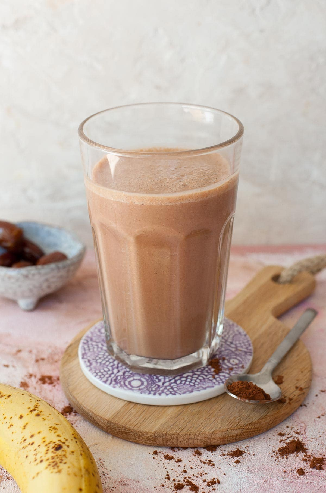

Chocolate Peanut Butter Banana Smoothie

Description
A delicious and creamy chocolate peanut butter banana smoothie
is sure a great way to start your day. It tastes like a
chocolate smoothie even though no chocolate has been added!
It’s a great way to satisfy your sweet tooth with something
healthy.
Ingredients
- 1 banana
- 1 cup milk 240 ml
- 2 tablespoons (6 tablespoons) peanut butter
- 5 small dates or 2 tablespoons maple syrup
- 1 tablespoon cocoa powder preferably Dutch-processed
- 1 teaspoon vanilla extract
Steps
- Measure out all the ingredients.
- Add all the ingredients into the blender container.
- Mix thoroughly (I like to mix it for a good 2-3 minutes)
until smooth and creamy (if using dates, make sure to read
my notes that are written below).
Visit for more.